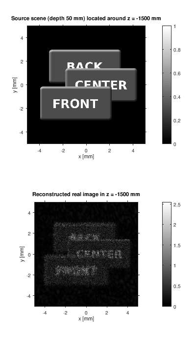
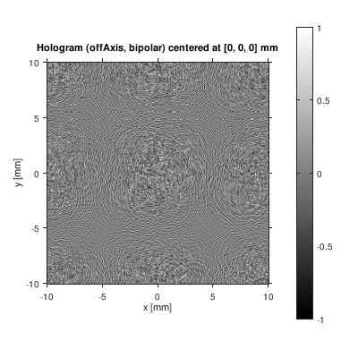

CGDH Tools
Computer generated display holography (CGDH) tools is a set of Octave/MATLAB/Scilab functions and demos. They show basic procedures in CGDH and computational Fourier optics.
The code is mainly educational. Those who want to understand computer generated display holography are encouraged to read the code of the demos and the CGDH core functions. The code tries to be as simple and readable as possible. Thus, it does not contain optimizations that would obfuscate principles; the only exception is that the code tries to use matrix operations whenever possible as Octave/MATLAB/Scilab is optimized for matrices. Anyone who needs high performance should adjust or rewrite the scripts according to particular needs.
The code is published under MIT License.
Copyright © 2018 University of West Bohemia
Petr Lobaz, lobaz@kiv.zcu.cz
Faculty of Applied Sciences
Pilsen, Czech Republic
http://holo.zcu.cz
CGDH Tools were officialy introduced at the conference "11th International Symposium on Display Holography (ISDH 2018)". Preprint of the conference article can be downloaded here. If you want to cite CGDH Tools in your publications, please cite:
Lobaz, P. "CGDH Tools: Getting started in computer generated display holography." In: Proceedings of the 11th International Symposium on Display Holography. In press. 2018
Check also holo.zcu.cz for more information on computer generated display holography.
Requirements
The main development platform is Octave (https://www.gnu.org/software/octave/). The code (.m files) is fully compatible with MATLAB. The code is also provided in Scilab syntax (.sci and .sce files).
The Octave code was developed in version 4.x. It was tested in version 4.4. Version 4.2 should work fine.
The code was tested in MATLAB R2017a. It should work with most MATLAB versions.
The Scilab code was tested in version 6.0.1 (https://www.scilab.org/). It requires module IPCV 1.2 (Image Processing and Computer Vision Toolbox for Scilab, http://atoms.scilab.org/toolboxes/IPCV/1.2, http://scilabipcv.tritytech.com) for image loading and saving.
Features
CGDH Tools is built around demos. Currently available are:
Propagation of light between parallel planes. Implemented methods are:
- convolution in the spatial domain (Rayleigh-Sommerfeld, Fresnel, etc.),
- convolution in the frequency domain (angular spectrum, Fresnel, etc.),
- Fourier transform based (Fresnel, Fraunhofer).
Simulation of a simple digital hologram recording and its reconstruction. Provided demos show hologram of an image and of a simple point cloud. They also simulate a real image reconstruction as well as a photographing of a reconstructed virtual image.
The demos also show various hologram recording setups (on-axis, off-axis, lensless Fourier), hologram encoding methods (interference based, bipolar intensity, kinoform, etc.) and hologram manipulation (bleaching, binarization).Calculation of a "layered hologram". A 3-D scene is decomposed to a set of parallel layers (billboards). The calculation solves hidden surface elimination.
Hologram of a point cloud using a naive method and using a wavefront recording plane.
Holographic stereogram of a point cloud. The demo allows to compare various approaches (basic, phase added stereogram - PAS, compensated phase added stereogram - CPAS, accurate phase added stereogram - APAS, accurate compensated phase added stereogram - ACPAS).
In addition, there are three self-contained demos (they do not use CGDH Tools functionality) that show basic procedures in computer generated display holography.
Example output
Following images were calculated using Octave 4.4.0. They show a geometrical image of a layered scene (stack of three parallel billboards), their off-axis hologram encoded with bipolar intensity scheme, and its real image reconstruction.

The scene and its reconstruction from a hologram

The calculated hologram
Structure
The demos are located in the numbered folders. It is recommended to explore them
in that order. The core functionality is in the folder cgdhtools.
01_standalone_demos
Three standalone demos that do not use CGDH Tools functionality. Those that have little experience with computational Fourier optics should explore them first as they directly show the calculations. In the other demos, most calculations are "hidden" in the functions of CGDH Tolls.02_simple_examples
The basic usage of CGDH Tools. The demos are as short as possible. It is highly recommended to explore these demos first.03_demo_basic_functions
Computational Fourier optics uses many special complex valued functions. This demo allows to explore them. It is quite safe to skip this demo if you are not interested in calculation details.04_demo_propagation
Examples of light propagation between parallel planes. As light propagation simulation is an ubiquitous part of computational Fourier optics and computational holography, it is highly recommended to explore these demos.05_demo_digital_hologram
Simulation of recording a digital hologram of a flat image and of a simple point cloud. The demos show how to reconstruct a real image and how to take a photograph of a virtual image. Moreover, it is possible to compare various hologram recording setups (on-axis, off-axis, lensless Fourier), hologram encoding methods (classical interference based, bipolar intensity, kinoform, etc.) and hologram processing (binarization, bleaching). Finally, there is a demo that calculates a diffractive optical element (DOE) that projects an image to a specified distance.06_demo_layered_hologram
Hologram of a layered scene (scene decomposed to a stack of parallel billboards). The demo shows the simplest method how to handle visibility.07_demo_hologramPointCloud
Hologram of a point cloud. The demo allows to compare speed of the naive calculation and the calculation using a wavefront recording plane.08_demo_stereogram
Calculation of a holographic stereogram. The demo allows to compare various approaches (basic, phase added stereogram - PAS, compensated phase added stereogram - CPAS, accurate phase added stereogram - APAS, accurate compensated phase added stereogram - ACPAS).cgdhtools
The core functionality.development
Utilities used in CGDH Tools developmentexample_output
The images that were referenced in the section Example output.images
Some input images that are used in the demos.